Advanced function block faceplates
The faceplate library includes pop-up faceplate displays for the Advanced function blocks. These displays are located in the FaceplateFB subfolder under the Pictures folder in the DeltaV Operate configure mode. (In the DeltaV directory, they are in the DeltaV\DvData\Graphics-iFix\Pic\FaceplateFB subdirectory.)
The faceplates are listed in the following table:
|
Faceplate |
Description |
|---|---|
|
AVTR_fp |
The faceplate display for the analog voter (AVTR) function block. |
|
DVTR_fp |
The faceplate display for the discrete voter (DVTR) function block. |
|
CEM_fp |
The faceplate display for the Cause & Effect Matrix (CEM) function block. |
|
STD_fp |
The faceplate display for the State Transition Diagram (STD) function block. |
|
SEQ_fp |
The faceplate display for the Step Sequencer (SEQ) function block. |
AVTR Faceplate
The faceplate display for the AVTR function block, AVTR_fp, is opened in runtime from a button on the AVTR dynamos on the primary (or other) display. The faceplate display consists of a tabbed control, a "close picture" button, a pushpin button, an "open module faceplate" button, and the function block path similar to what is shown in the example below. The pushpin button appears when multiple faceplate capability has been enabled in UserSettings.grf. When multiple monitor capability has been enabled, a display selector appears to the right of the pushpin.
Trip Tab (AVTR Faceplate)
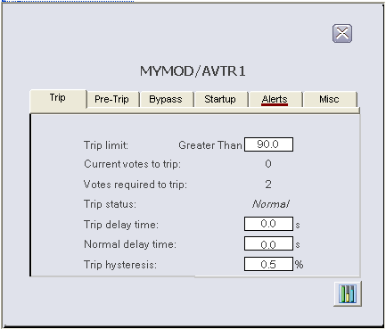
The following items are contained on the Trip tab of the AVTR function block faceplate:
Trip limit - A data entry box and text label for TRIP_LIM. DETECT_TYPE is shown in text to the left of the data entry box and the UNITS field of IN_SCALE is shown to the right.
Current votes to trip - A value field and text label for current number of trip votes, TRIP_VOTES.
Votes required to trip - A value field and text label for A_NUM_TO_TRIP.
Trip status - A text value field and text label for TRIP_STATUS. A numeric value field for DELAY_TIMER is visible when TRIP_STATUS is " - delayed."
Trip delay time- A data entry box and text label for TRIP_DELAY.
Normal delay time - A data entry box and text label for NORMAL_DELAY.
Trip hysteresis - A data entry box and text label for TRIP_HYS is always visible.
Pre-Trip Tab (AVTR Faceplate)
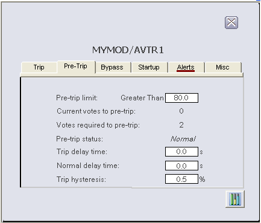
The following items are contained on the Pre-Trip tab of the AVTR function block faceplate:
Pre-trip limit - A data entry box and text label for PRE_TRIP_LIM. DETECT_TYPE is shown in text to the left of the data entry box and the UNITS field of IN_SCALE is shown to the right.
Current votes to pre-trip - A value field and text label for PRE_VOTES.
Votes required to pre-trip - A value field and text label for A_NUM_TO_TRIP.
Pre-trip status - A text value field and text label for PRE_TRIP_STATUS. A numeric value field for PRE_DELAY_TIMER is visible when PRE_TRIP_STATUS is " - delayed."
Trip delay time- A data entry box and text label for TRIP_DELAY.
Normal delay time - A data entry box and text label for NORMAL_DELAY.
Trip hysteresis - A data entry box and text label for TRIP_HYS is always visible.
Bypass Tab (AVTR Faceplate)
When the bypass option "Bypass permit control should be visible in operator interface" is selected, a button appears in the block faceplate that operators can use to set the BYPASS_PERMIT. If you are configuring your own control—either a hardware switch or user interface control—or if you are wiring to BYPASS_PERMIT in the function block diagram, do not select this option.
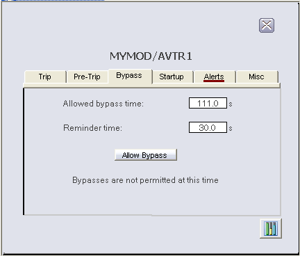
The following items are contained on the Bypass tab of the AVTR function block faceplate:
Allowed bypass time - A data entry box for BYPASS_TIMEOUT and text label.
Bypass timer - A value field and text label for BYPASS_TIMER is visible when the value is non-zero. The value field allows a write to BYPASS_TIMER when visible.
Reminder time - A data entry box for REMINDER_TIME and text label.
Allow Bypass button - This pushbutton is visible when BYPASS_PERMIT is False and the bypass option "Bypass permit control should be visible in runtime interface" is True. A click on the pushbutton sets BYPASS_PERMIT to True.
Disallow Bypass button - This pushbutton is visible when BYPASS_PERMIT is True and the bypass option "Bypass permit control should be visible in runtime interface" is True. A click on the pushbutton sets BYPASS_PERMIT to False. To the right of the pushbutton is a red "light" visible when OUT_D is 1 and OUT_D_NOBYPASS is 0 and the bypass option "Bypass permit control should be visible in runtime interface" is True. The red light indicates that pressing the button will cause a trip.
The following messages may also be visible in run mode, depending upon bypass conditions:
An input is bypassed - Visible when the Bypass bit is set in AVTR_ALERTS.
A bypassed input exceeds the pre-trip limit - Visible when the "bypassed pre-trip" bit is set in AVTR_ALERTS.
A bypassed input exceeds the trip limit - Visible when the "bypassed trip" bit is set in AVTR_ALERTS.
Trip inhibited - votes required exceed votable inputs - Visible when trips are inhibited per TRIP_STATUS and the startup bypass is not active.
Bypasses are not permitted at this time - Visible when BYPASS_PERMIT is False and the bypass option "Bypass permit is not required for maintenance bypass" is False.
Startup Tab (AVTR Faceplate)
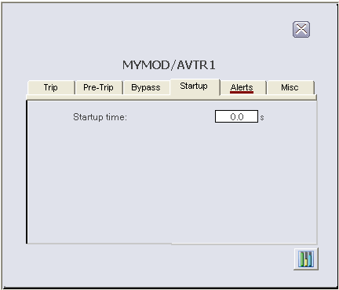
The following items are contained on the Startup tab of the AVTR function block faceplate:
Startup time - A data entry box and text label for STARTUP_TIME is visible when the startup override is configured to be time-based.
Startup timer - A value field and text label for STARTUP_TIMER is visible when the startup override is configured to be time-based and the startup override is active. The value field allows a write to STARTUP_TIMER when visible.
Stabilization time - A data entry box and text label for STABLE_TIME is visible when the startup override is configured to be time-based and the startup override is configured to expire on stabilization.
Time to stable (last) - A value field and text label for TIME_TO_STABLE is visible when the startup override is configured to be time-based and the startup override is configured to expire on stabilization.
Stabilization timer - A value field and text label for STABLE_TIMER is visible when the startup override is configured to be time-based, the startup override is configured to expire on stabilization, and the startup override is active.
Reminder time -A data entry box and text label for configured REMINDER_TIME is visible when the startup override is configured to be time-based and the reminder is configured to apply to startup bypasses.
The following messages may also be visible in run mode, depending upon startup override conditions:
Trip inhibited - startup active - Visible when the startup override is active
Waiting for startup reset event - Visible when the startup override is active and the startup bypass duration is configured to be event-based.
Alerts Tab (AVTR Faceplate)
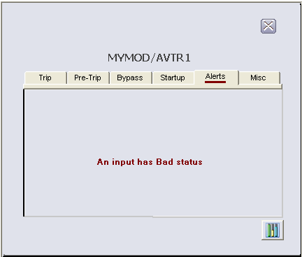
The following messages may appear on the Alerts tab of the AVTR function block faceplate, depending upon which bits are set in AVTR_ALERTS:
TRIPPED - Visible when the Trip bit is set.
PRE-TRIPPED - Visible when the Pre-Trip bit is set.
An input is bypassed - Visible when the Bypass bit is set.
Startup is active - Visible when the Startup bit is set.
High/Low deviation limit exceeded - Visible when the Deviation bit is set.
Reminder is active - Visible when the Reminder bit is set.
An input has Bad status - Visible when the "bad input" bit is set.
A bypassed input exceeds the pre-trip limit - Visible when the "bypassed pre-trip" bit is set.
A bypassed input exceeds the trip limit - Visible when the "bypassed trip" bit is set.
Misc Tab (AVTR Faceplate)
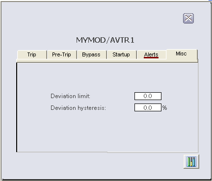
The following items are contained on the Misc tab of the AVTR function block faceplate:
Deviation limit - A data entry box and text label for DEV_LIM is visible when the runtime-only parameter NOF_INPUTS is greater than 1 (visible unless this is a 1oo1 voter). The UNITS field of IN_SCALE is shown to the right of the data entry box.
Deviation hysteresis - A data entry box and text label for DEV_HYS is visible when the runtime-only parameter NOF_INPUTS is greater than 1.
DVTR Faceplate
The faceplate display for the DVTR function block, DVTR_fp, is opened in runtime from a button on the DVTR dynamos on the primary (or other) display. The faceplate display consists of a tabbed control, a "close picture" button, a pushpin button, an "open module faceplate" button, and the function block path similar to what is shown in the example below. The pushpin button appears when multiple faceplate capability has been enabled in UserSettings.grf. When multiple monitor capability has been enabled, a display selector appears to the right of the pushpin.
Trip Tab (DVTR Faceplate)
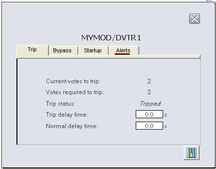
The following items are contained on the Trip tab of the DVTR function block faceplate:
Current votes to trip - A value field and text label for current number of trip votes, TRIP_VOTES.
Votes required to trip - A value field and text label for A_NUM_TO_TRIP.
Trip status - A text value field and text label for TRIP_STATUS. A numeric value field for DELAY_TIMER is visible when TRIP_STATUS is " - delayed."
Trip delay time- A data entry box and text label for TRIP_DELAY.
Normal delay time - A data entry box and text label for NORMAL_DELAY.
Bypass Tab (DVTR Faceplate)
When the bypass option "Bypass permit control should be visible in operator interface" is selected, a button appears in the block faceplate that operators can use to set the BYPASS_PERMIT. Do not select this option if you are configuring your own control—either a hardware switch or user interface control—or if you are wiring to BYPASS_PERMIT in the function block diagram.
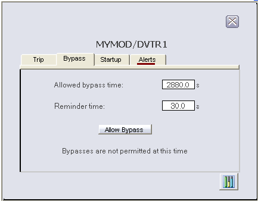
The following items are contained on the Bypass tab of the DVTR function block faceplate:
Allowed bypass time - A data entry box for BYPASS_TIMEOUT and text label.
Bypass timer - A value field and text label for BYPASS_TIMER is visible when the value is non-zero. The value field allows a write to BYPASS_TIMER when visible.
Reminder time - A data entry box for REMINDER_TIME and text label.
Allow Bypass button - This pushbutton is visible when BYPASS_PERMIT is False and the bypass option "Bypass permit control should be visible in runtime interface" is True. A click on the pushbutton sets BYPASS_PERMIT to True.
Disallow Bypass button - This pushbutton is visible when BYPASS_PERMIT is True and the bypass option "Bypass permit control should be visible in runtime interface" is True. A click on the pushbutton sets BYPASS_PERMIT to False. To the right of the pushbutton is a red "light" visible when OUT_D is 1 and OUT_D_NOBYPASS is 0 and the bypass option "Bypass permit control should be visible in runtime interface" is True. The red light indicates that pressing the button will cause a trip.
The following messages may also be visible in run mode, depending upon bypass conditions:
An input is bypassed - Visible when the Bypass bit is set in DVTR_ALERTS.
A bypassed input is in the trip state - Visible when the "bypassed trip" bit is set in DVTR_ALERTS.
Trip inhibited - votes required exceed votable inputs - Visible when trips are inhibited per TRIP_STATUS and the startup bypass is not active.
Bypasses are not permitted at this time - Visible when BYPASS_PERMIT is False and the bypass option "Bypass permit is not required for maintenance bypass" is False.
Startup Tab (DVTR Faceplate)
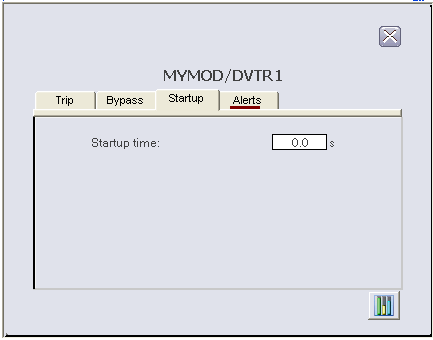
The following items are contained on the Startup tab of the DVTR function block faceplate:
Startup time - A data entry box and text label for STARTUP_TIME is visible when the startup override is configured to be time-based.
Startup timer - A value field and text label for STARTUP_TIMER is visible when the startup override is configured to be time-based and the startup override is active. The value field allows a write to STARTUP_TIMER when visible.
Stabilization time - A data entry box and text label for STABLE_TIME is visible when the startup override is configured to be time-based and the startup override is configured to expire on stabilization.
Time to stable (last) - A value field and text label for TIME_TO_STABLE is visible when the startup override is configured to be time-based and the startup override is configured to expire on stabilization.
Stabilization timer - A value field and text label for STABLE_TIMER is visible when the startup override is configured to be time-based, the startup override is configured to expire on stabilization, and the startup override is active.
Reminder time -A data entry box and text label for configured REMINDER_TIME is visible when the startup override is configured to be time-based and the reminder is configured to apply to startup bypasses.
The following messages may also be visible in run mode, depending upon startup override conditions:
Trip inhibited - startup active - Visible when the startup override is active.
Waiting for startup reset event - Visible when the startup override is active and the startup bypass duration is configured to be event-based.
Alerts Tab (DVTR Faceplate)
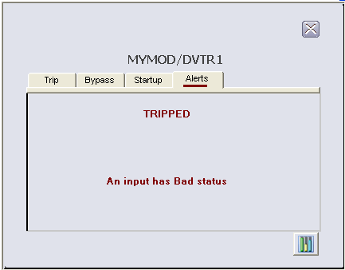
The following messages may appear on the Alerts tab of the DVTR function block faceplate, depending upon which bits are set in DVTR_ALERTS:
TRIPPED - Visible when the Trip bit is set.
An input is bypassed - Visible when the Bypass bit is set.
Startup is active - Visible when the Startup bit is set.
A bypassed input is in the trip state - Visible when the "bypassed trip" bit is set.
Reminder is active - Visible when the Reminder bit is set.
An input has Bad status - Visible when the "bad input" bit is set.
CEM Faceplate
The faceplate display for the CEM function block, CEM_fp, is opened in runtime from a button on the CEM dynamo on the primary (or other) display. The faceplate display consists of a tabbed control, a "close picture" button, a pushpin button, an "open module faceplate" button, and the function block path. The pushpin button appears when multiple faceplate capability has been enabled in UserSettings.grf. When multiple monitor capability has been enabled, a display selector appears to the right of the pushpin.
There are two tabs: General and Overrides. The faceplate display is opened in Run mode in the context of a single Effect as configured when the CEM dynamo was pasted on the picture in Configure mode.
General Tab (CEM Faceplate)
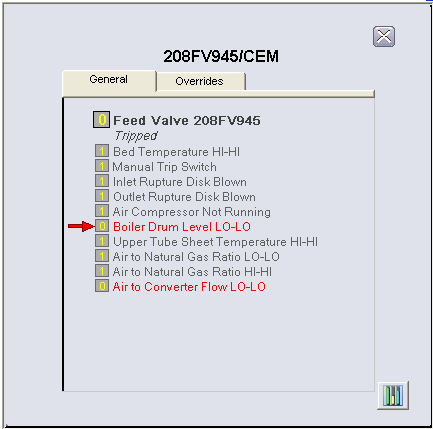
The following items are contained on the General tab of the CEM function block faceplate:
A text value field for the effect description, DESC_EFFECTx.
To the left of the effect description is the value of EFFECTx (1 or 0, where 1=normal and 0=tripped). The background color is that of the Status global color table based on EFFECTx.ST.
Below the effect description is the named state of STATEx. When STATEx is "Ready to Reset," a Reset pushbutton is visible to the right of the text. A click on the Reset button resets RESETx. When STATEx is "Trip Initiated - Delayed," the value of DELAY_TIMER appears to the right of the text.
Below the STATEx text field are 16 rows, one for each potential associated Cause for this Effect. Visibility for a row is enabled when that Cause is associated with this Effect per the particular bit in MATRIX[x] and that Cause is not being masked per CAUSE_MASK. A visible row will always show the text description for CAUSEy (DESC_CAUSEy). When CAUSEy is inactive per bit y in ACTIVE_CAUSESx, the color of the text is the inactive color (default is gray) of a global color table. When bit y is active, the text color is the active color (default is bright red).
To the left of the text field is a value field for CAUSEy (where 1=normal and 0=trip demand). The background color is that of the Status global color table based on CAUSEy.ST. When the value of FIRST_OUTx is non-zero, a red "first out" arrow points from left to right to each Cause that was active when the trip was initiated (in practice there is normally one visible arrow). The arrows remain visible until the block clears FIRST_OUTx.
Overrides Tab (CEM Faceplate)
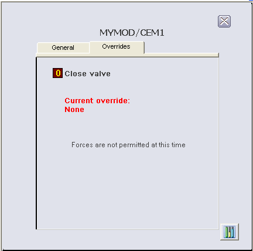
The following items are contained on the Overrides tab of the CEM function block faceplate:
A text value field for the effect description, DESC_EFFECT.
To the left of the effect description is the value of EFFECTx (1 or 0). The background color is that of the Status global color table based on EFFECTx.ST.
Below the Effect description is a text label (Current Overrides) and the text value for OVERRIDESx, always visible.
Remove Force button - When OVERRIDESx is "Forced to Trip" or "Forced to Normal," there is a button visible labeled "Remove Force." Clicking this button sets FORCE_EFFECTx to "Do not Force."
Force Trip button and Force Normal button - When OVERRIDESx is "None" or "All Associated Causes Masked," and FORCE_PERMIT is True or a force permit is not required (FORCE_OPTS.PermitNotReq=True), there are two buttons visible labeled "Force Trip" and "Force Normal." Clicking these buttons sets FORCE_EFFECTx to "Force Trip" or "Force Normal" per the button pushed.
Forces are not permitted at this time - This text string is visible if FORCE_PERMIT is False and a force permit is required (FORCE_OPTS.PermitNotReq=False).
Allow Forces button - Visible when FORCE_PERMIT is False and the force permit control should be visible (FORCE_OPTS.ForcePermitVisibleInHMI=True). Clicking this button sets FORCE_PERMIT to True.
Disallow Forces button - Visible when FORCE_PERMIT is True and the force permit control should be visible (FORCE_OPTS.ForcePermitVisibleInHMI=True). Clicking the button sets FORCE_PERMIT to False.
Red Stop Sign -Visible next to the Disallow Forces button when LATENT_TRIP is True and the force permit control should be visible (FORCE_OPTS.ForcePermitVisibleInHMI=True). A visible stop sign indicates that removing the force permit will result in a trip, that is, there is an Effect being forced to Normal that has one or more active Causes.
STD Faceplate
The faceplate display for the STD function block, STD_fp, is opened in runtime from a button on the STD dynamo on the primary (or other) display. The faceplate display consists of the main display area, a "close picture" button, a pushpin button, an "open module faceplate" button, and the function block path. The pushpin button appears when multiple faceplate capability has been enabled in UserSettings.grf. When multiple monitor capability has been enabled, a display selector appears to the right of the pushpin.
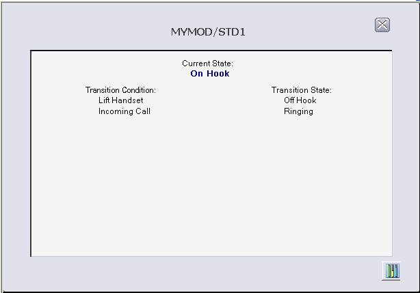
The main display area has a text label (Current State) and the STATE parameter, always visible, showing the current state of the block. There are two columns of conditionally visible text strings.
The left column header has the label "Transition Condition," and the right column has the label "Transition State," always visible. In the left column, DESC_INx parameters are visible, based on the value of VALID_TRANS. This results in text descriptions being visible for those inputs currently being evaluated by the block.
The right column has a text string visible to the right of each visible string in the left column, indicating the state to which the block will transition if that input becomes True. The text string is one of the opsel states of STATE based on MATRIX and VALID_TRANS.
SEQ Faceplate
The faceplate display for the SEQ function block, SEQ_fp, is opened in runtime from a button on the SEQ dynamo on the primary (or other) display. The faceplate display consists of the main display area , a "close picture" button, a pushpin button, and "open module faceplate" button, and the function block path. The pushpin button appears when multiple faceplate capability has been enabled in UserSettings.grf. When multiple monitor capability has been enabled, a display selector appears to the right of the pushpin.
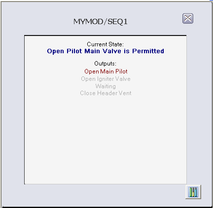
The main display area has a text label (Current State) and the STATE parameter, always visible, showing the current state of the block.
Below the text label "Outputs" there is a column of text descriptions of DESC_OUTx parameters whose color is based on the value of OUT_Dx and a global color table. The descriptions of outputs whose value is True in the current state are shown more prominently than those whose value is False.